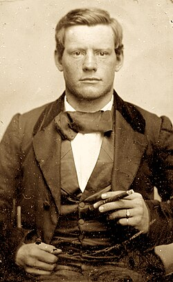

Exploring Route 66 and Hidden Gems of the American Southwest
Route 66
Route 66, known as the "Main Street of America," is a historic highway connecting Chicago to Santa Monica. Spanning 2,448 miles through 8 states, it represents the golden age of American road travel.
📍 The Route
From Chicago to Santa Monica, passing through Illinois, Missouri, Kansas, Oklahoma, Texas, New Mexico, Arizona, and California.
🚗 The Experience
Journey through authentic Americana with quirky attractions, vintage diners, and breathtaking desert landscapes.
⭐ The Legacy
Decommissioned in 1985 but celebrated by travelers seeking nostalgic road trip experiences and authentic Americana.
Established in 1926, Route 66 became a major east-west highway crucial to American commerce and culture during the Great Depression and post-WWII era.
1926 - Birth
Route 66 officially established as a major transcontinental highway connecting the Midwest to California.
1930s-1940s - Golden Age
Primary route for westbound travelers during the Dust Bowl and post-WWII migration periods.
1985 - Decommissioned
Officially removed from the U.S. Highway System but remains iconic in American culture and nostalgia.
Vintage Americana is the heart of Route 66. Classic diners, retro motels, and roadside attractions define the authentic Route 66 experience.
🍔 Classic Diners
Authentic 1950s diners serving classic American burgers, milkshakes, and homemade pie with genuine hospitality.
🏨 Retro Motels
Historic motels with neon signs, vintage furnishings, and the authentic Route 66 road trip atmosphere.
🎨 Roadside Art
Quirky attractions, vintage signs, and folk art that define the unique Route 66 aesthetic.
Route 66 is a shopper's paradise with unique vintage shops, antique stores, and local boutiques offering authentic Americana.
🛍️ Antique Shops
Browse authentic vintage collectibles, furniture, and memorabilia from different eras of American history.
🎁 Local Boutiques
Support local artisans and find unique handmade crafts, jewelry, and souvenirs.
📦 Souvenirs
Authentic Route 66 memorabilia, vintage postcards, and classic Americana gifts.
Explore Locations
Slingman, Arizona
Historic stop on Route 66 known for quirky roadside attractions, vintage shops, and authentic Americana. A must-visit for Route 66 enthusiasts.
🏪 Attractions
Vintage shops, classic diners, and iconic Route 66 signs. Don't miss local burger joints and historic landmarks.
📸 Photo Ops
Instagram-worthy shots with vintage signs, classic cars, and desert landscapes.
🍽️ Dining
Authentic Route 66 dining with classic burgers, milkshakes, and homemade pies.
Slingman Gallery
Slingman Adventures
Route 66 Slingman
Slingman Exploration
Desert Landscape
Slingman Attractions
Route 66 Experience
Slingman Memories
Arizona Adventure
Slingman Videos
Slingman Adventure Video 1
Nelson Ghost Town
Fascinating ghost town near Route 66 offering a glimpse into Arizona's mining history and abandoned structures frozen in time.
👻 History
Abandoned mining town from the late 1800s. Explore historic buildings and learn about mining heritage.
🏚️ Exploration
Walk through preserved structures and experience the eerie atmosphere of a true American ghost town.
📷 Photography
Incredible photo opportunities with weathered buildings, vintage relics, and stunning desert vistas.
Kingsman, Arizona
Charming Route 66 town offering authentic Americana, local character, and a true taste of the old highway experience.
🚗 Route 66 Spirit
Experience authentic Route 66 atmosphere with vintage signs, classic architecture, and local hospitality.
🏜️ Desert Beauty
Stunning desert landscapes and wide-open spaces perfect for road trip photography.
🤠 Local Culture
Meet friendly locals and experience genuine small-town American culture.
Route 66 Map
Interactive map showing the locations we explore
⚰️ Riverside Cemetery
Denver's Oldest & Most Haunted Burial Ground — Est. 1876
Nestled on Denver's northeast border, Riverside Cemetery is the city's oldest active burial ground, established in 1876. Girded by the flaring flames and brimstone stench of the nearby Suncor refinery, this forgotten necropolis holds the bones of Denver's founders, outlaws, murder victims, and war heroes. The cemetery stopped selling new plots years ago, and the grass grows wild over the forgotten dead. Visitors report strange photographs, slamming doors on windless days, and apparitions drifting between the headstones at dusk. These are their stories.
James Archer
1824 — 1882
"He stood above the city he built — and still watches over it."
👁️ THE WATCHER
James Archer's grave is unlike any other at Riverside Cemetery. A towering bronze statue of the man himself — hat in hand, coat buttoned against the Colorado wind — stands atop a massive stone pedestal, his cold metal eyes fixed permanently on the Denver skyline. He does not look down at the earth. He looks outward. Always outward.
Archer was a prominent Denver businessman and civic figure who helped shape the city's early commercial identity. He died in 1882, and his family commissioned this imposing monument as a testament to his legacy. But visitors who come at dusk report something unsettling: the statue seems to shift. Photographs taken from one angle show the figure facing east; taken minutes later from the same spot, it appears to face north. No one has ever caught the movement on camera.
Local legend holds that on the anniversary of his death, a figure in a long dark coat is seen walking the cemetery paths at midnight — always heading toward the statue, never away from it. Those who have followed the figure say it simply vanishes when it reaches the pedestal. The bronze man stands alone. Waiting.
Dogs brought to the cemetery consistently refuse to approach the Archer monument. They sit at a distance, ears flat, and will not move.
📹 Video From The Grave
Season 1 — First encounter with the Archer monument at Riverside Cemetery
Nathan Baker & Frank
1843 — 1934
"A man is nothing without his horse. They buried them apart. Neither rests."
🐴 THE HORSE THAT WOULD NOT LEAVE
Nathan Baker's headstone is broken — the bottom half sheared clean off, as if something pushed up from below. The stone has been broken for decades. No one has repaired it. The cemetery staff say it keeps happening: they reset the stone, and within weeks it is broken again. The ground beneath it, they note, is always disturbed.
Baker was a Colorado pioneer and horse trader who reportedly loved his horse Frank more than any human being. He outlived Frank by eleven years, and by all accounts never recovered from the loss. He requested in his will that Frank be buried in the same plot. The request was denied. Frank was buried in a separate section of the cemetery. Baker was buried alone.
Visitors to the Baker grave at night report the sound of hooves on the gravel paths — a slow, deliberate walk that circles the headstone and then stops. No animal is ever found. Photographs taken near the grave frequently show a blurred shape at ground level, low and elongated, like a large animal lying down.
One groundskeeper, who worked at Riverside for thirty years, refused to enter the Baker section after dark. He never explained why. He simply would not go.
📹 Video From The Grave
Season 3 — The broken headstone of Nathan Baker and the legend of Frank
Captain Silas Soule
1838 — 1865
"He refused the order. He told the truth. He was shot dead at 26."

⚖️ THE MURDERED WITNESS
On November 29, 1864, Colonel John Chivington ordered his troops to attack a peaceful encampment of Cheyenne and Arapaho people at Sand Creek, Colorado. It was not a battle. It was a massacre. Between 150 and 200 men, women, and children were killed. Captain Silas Soule refused to give the order to his men. He stood down. He watched. And then he testified.
Soule gave damning testimony against Chivington at the military inquiry. He named names. He described what he saw. He was the only officer who did. On April 23, 1865 — less than a month after his wedding — Silas Soule was shot dead in the street in Denver. The killer was never convicted. The case was dropped. Chivington was never charged.
Visitors to Soule's grave report a persistent cold spot, even on warm summer days. Some have heard what sounds like a man speaking quietly — not in distress, but urgently, as if giving testimony to someone just out of earshot. The words are never clear. The voice always stops when you get close.
Silas Soule was 26 years old. He had been married for 23 days.
📹 Video From The Grave
Season 9 — The grave of Silas Soule and the ghost of Sand Creek
Marie Contassot
1871 — 1894
"Morte à Denver le 28 Octobre 1894. Elle avait 23 ans."
👼 THE STRANGLER'S VICTIM
Marie Contassot was a young French woman, 23 years old, who died in Denver on October 28, 1894. Her grave is marked with a large stone angel — or what remains of one. The angel's arms are broken. Its face has been worn smooth by weather and, some say, by hands. The inscription is in French. She is far from home.
Denver in the 1890s had a strangler. Between 1893 and 1895, several young women were found dead under circumstances that were never fully explained. The cases were closed without convictions. Marie Contassot's death was officially recorded as illness. But her family, who traveled from France to bury her, reportedly told the cemetery staff she had been found in her room with marks on her throat.
The angel monument has been vandalized twice. Both times, the vandalism was discovered in the morning with no witnesses. Security footage from a nearby camera showed only static during the hours in question. The broken forearm of the angel was found placed upright in the ground several feet away, as if planted there deliberately.
The crematorium near her grave has a door that slams on windless days. Staff have stopped trying to latch it. It opens again within the hour.
📹 Video From The Grave
Season 8 — Marie Contassot and the broken angel of Riverside Cemetery
Richard Whitsitt
1830 — 1881
"Denver's first duel. One man walked away. One did not."
🔫 THE DUELIST
Richard Whitsitt holds a grim distinction: he was killed in Denver's first recorded duel. In 1881, a dispute over a business deal escalated to pistols at dawn. Whitsitt was shot through the chest. His opponent walked away. The duel was technically illegal, but no charges were filed. Denver was still a frontier town. These things happened.
His grave is marked by a stone angel — but the angel is missing its right forearm. No one knows when it was lost or where it went. Cemetery records show the stone was intact as recently as 1940. By 1960, the arm was gone. There is no record of vandalism, no fragment found nearby. The arm simply ceased to exist.
Visitors who linger near the Whitsitt grave after sunset report hearing a single sharp crack — like a pistol shot — from somewhere in the cemetery. It happens once. It does not repeat. Those who turn toward the sound find nothing. Those who do not turn say the silence that follows feels like someone standing very close behind them.
A local historian who spent three nights at Riverside documenting paranormal activity reported the crack sound on all three nights, always between 11 PM and midnight, always from the direction of the Whitsitt grave.
📹 Video From The Grave
Season 6 — Richard Whitsitt and the pistol shot that echoes through time
Civil War Veterans
Sand Creek Massacre — 1864
"They followed orders. Some of them regretted it for the rest of their lives."
🪖 THE RESTLESS REGIMENT
In the northeast corner of Riverside Cemetery, rows of white military headstones stand in precise formation — the graves of Colorado's Civil War veterans, many of whom also served at Sand Creek. The stones are identical. The names are different. The silence here is different from the rest of the cemetery. It is not peaceful. It is held.
Several of the men buried here participated in the Sand Creek Massacre under Colonel Chivington. Some later testified that they had been ordered to fire. Some testified they had refused. The record is incomplete. The truth, as with most frontier violence, was buried alongside the men who knew it.
Visitors to this section at dawn — particularly in late November, near the anniversary of the massacre — report seeing figures moving between the headstones in the early morning mist. The figures are dressed in period military clothing. They do not respond when called to. They disappear when the sun fully rises.
One visitor photographed what appeared to be a full company of soldiers standing at attention between the headstones. When she looked up from her camera, the section was empty. The photograph was later analyzed by a photography expert who found no evidence of manipulation.
📹 Video From The Grave
Season 2 — The Civil War section and the ghosts of Sand Creek
The Riverside River
The South Platte — Always
"She is always looking for something in the water. She never finds it."
🌊 LA LLORONA OF DENVER
The South Platte River runs along the eastern edge of Riverside Cemetery, separating the dead from the living city beyond. The river is narrow here, shallow, unremarkable in daylight. At night, it is something else entirely.
For decades, residents of the neighborhoods bordering the cemetery have reported seeing a woman standing at the river's edge after midnight — always on the cemetery side, always facing the water. She is described consistently: long dark hair, pale dress, standing very still. When approached, she does not move. When called to, she does not respond. She is simply there, and then she is not.
Cemetery records from the 1890s reference the burial of a young mother and infant in the section nearest the river. The circumstances of their deaths are not recorded. The graves are unmarked. No one knows their names. But the woman at the water has been reported for over a hundred years, and the descriptions have never changed.
Children who live near the cemetery are told not to go near the river at night. They are not told why. They learn not to ask.
📹 Video From The Grave
Season 5 — The woman at the river and the unnamed graves of Riverside
Overview & Map
Riverside Cemetery, Denver, CO — Est. 1876
"5201 Brighton Blvd, Denver, CO 80216"
About Riverside Cemetery
Riverside Cemetery is Denver's oldest active cemetery, established in 1876. It is the final resting place of over 65,000 people, including Denver's founders, Civil War veterans, Sand Creek Massacre soldiers, and victims of frontier violence. The cemetery is maintained by a nonprofit preservation organization and is open to the public during daylight hours.
Visiting Information
Address: 5201 Brighton Blvd, Denver, CO 80216 | Open daily dawn to dusk | Free admission | Guided tours available seasonally | Photography permitted | Dogs on leash welcome (though some refuse to enter certain sections)